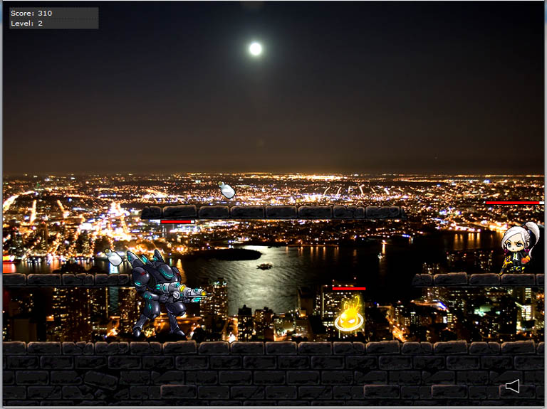

click and grab for zoom!

My first infinite-style side-shooting game (phew) that I coded using pure AS3 based on the ever popular MMORPG, MapleStory.
This was a real challenge as I had to create the AI of the monsters, their health algorithm all by myself.
But managed to pull it through before my submission dateline!
Shall make it more smooth before I decide to make it online.